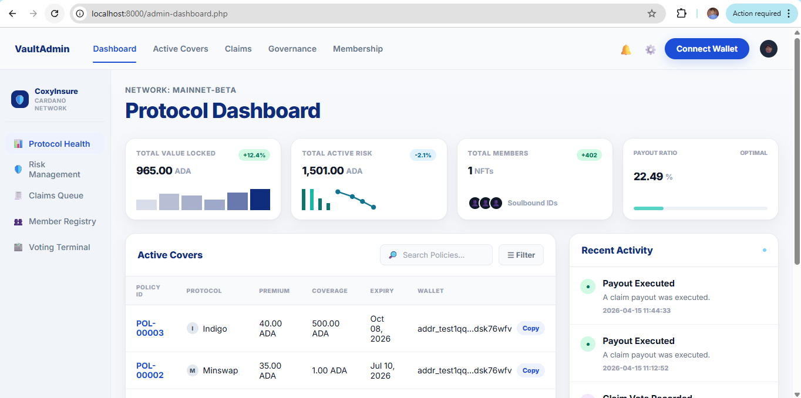
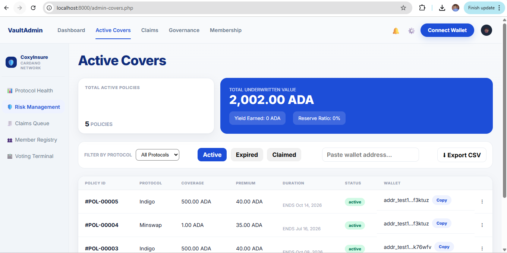

CoxyInsure User Help Documentation.
10. Admin Portal Overview
The admin portal is the oversight layer of CoxyInsure. It combines live metrics, cover monitoring, claim review, governance execution, and membership visibility into a centralized management interface.
10.1 Admin Dashboard
- Review total value locked, total active risk, total members, and payout ratio.
- Monitor recent activity and active covers.
- Copy wallet addresses directly from live tables.
10.2 Admin Claims and Governance
Claims pages show submitted evidence, descriptions, claim amounts, and current admin review state. Governance pages allow approved admins to execute payouts or reject claims. Reviewer roles can reject claims without executing payouts if your role model permits that separation.
10.3 Membership Oversight
The membership page should show registered users, wallet addresses, number of purchased covers, and latest cover deadlines. This helps the admin verify coverage patterns across the user base.

